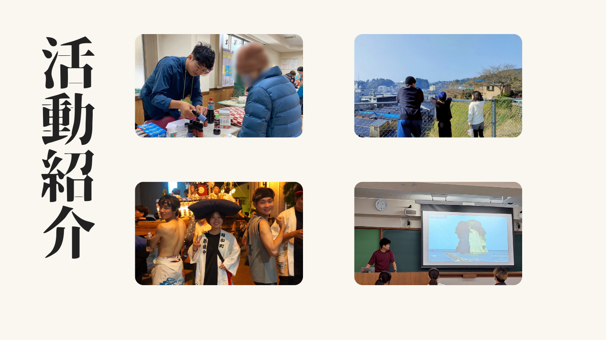

- コンセプト -
「魅力発信」と「防災意識」をかけ合わせた、そよかぜの活動をご紹介します。
地域のお祭りや文化、日常のあたたかさを発信していくプロジェクトです。
もしものときに備えた学びや、防災を日常の会話にする仕掛けをつくります。
「防災」と聞くと、どこか堅く、難しいもののように感じる人も多いかもしれません。
避難訓練やマニュアル、備蓄など、どうしても“やらなければならないこと”というイメージが先に立ちます。
特に学生や若い世代にとっては、日常の中で防災を自分ごととして捉えるのは簡単ではありません。
だからこそ、そよかぜはまず「魅力発信から防災へ」という形を大切にしています。
魅力を知ることから、防災は始まる
私たちは、被災地を「悲しい出来事があった場所」としてだけではなく、 今を生きる人たちの魅力があふれる場所として考えています。
地域の文化や風景、食べ物、人との出会いを伝えることで、
「行ってみたい」「この地域のことをもっと知りたい」という気持ちが生まれます。
その興味こそが、防災への第一歩だと私たちは考えています。
たとえば、能登や東北の魅力を紹介するイベントや展示を通じて、
その地域に親しみを持ってもらい、
「この地域では、どんな災害が起きたのだろう？」
「今、どんな復興が進んでいるのだろう？」と自然に関心を広げてもらう。
魅力発信は、堅苦しい防災の入り口をやわらかく開く“架け橋”です。
そよかぜの活動は、単に魅力を伝えたり、防災を教えたりするだけではありません。
「知る → 関心を持つ → 行動する」という流れをつくることを目指しています。
私たちは、能登や東北を訪れ、現地の方々と交流しながら、
その土地の魅力と防災の学びを自ら体験します。
その経験を持ち帰り、大学や地域のイベントで物販を行い、
現地の商品や支援品を通して多くの人に紹介しています。
また、講演では被災地の魅力とともに、そこで得た防災の知恵や教訓を、
誰もが楽しく学べる形で伝えています。
ときには実際に現地の方を招き、地域の生の声を届けることもあります。
そして、興味を持ってくださった方には、
実際に現地へ足を運び、自分の目で確かめ、地域とつながることができる訪問コースも設けています。
そよかぜが目指すのは、 防災を特別なこととしてではなく、地域を好きになることから始めることです。 地域の魅力を知ることは、その土地を大切に思う心を育てます。 そしてその想いが、自然と「守りたい」「支えたい」という気持ちに変わっていく。 それが、私たちが考える「防災のための魅力発信」です。 私たちは、風のように静かに、しかし確かに人と地域をつなぎながら、 好きという気持ちを支える力へと変えていきたいと考えています。